Kingsley Closure Survey Results
What Kingsley families told us about new boundaries, transition support and whether they plan to stay in D65.
The short version
- 69% indicated that their assigned school under the proposed boundaries is also their preferred school for 2026–27, but many respondents would prefer the flexibility to choose the school that is right for them.
- There was overwhelming support (78%) for walkable attendance boundaries combined with guaranteed placement at a designated Kingsley receiving school for those that request it.
- The large majority (85%) indicated they were likely to remain in District 65 for 2026-27, but 10% indicated they were likely to leave.
- The most commonly cited reasons that may contribute to a choice to leave were lack of trust in district administration (63%), lack of transparency and accountability in district decision-making (58%), and lack of trust in the board of education (55%).
Introduction
District 65 is working through a multi-phase Structural Deficit Reduction Plan (SDRP) to address budget deficits and achieve long-term financial sustainability. As part of SDRP Phase III, the district considered multiple school closure scenarios. On January 9, 2026, the Board of Education passed a resolution to proceed with the legally required public hearings to close Kingsley School at the end of the 2025–26 school year. More information is available on the District 65 SDRP website.
The purpose of this survey is to gather current, prospective, and former Kingsley parents’ perspectives on school transitions, supports that may ease the transition to a new school, and concerns related to this process.
This survey was created by Kingsley parents in partnership with the Legion of Data Nerds and is not affiliated with the District 65 administration or Board of Education. Aggregate results will be shared with District 65 leadership to ensure Kingsley families’ perspectives are represented.
If you have questions about this survey, please contact: Lauren McNamara, lauren.mcnamara@gmail.com Robin Telander, robin.telander@gmail.com
Methodology
The survey was sent to 470 parent emails on the Kingsley PTA mailing list and was circulated through community grassroots text messaging. The survey opened on Friday morning January 16, and data collection closed at 10pm on Monday January 19. The survey received 120 responses that accepted the informed consent for an estimated response rate of 25%.
The survey contained 20 questions on school boundaries, transition support, intent to stay in District 65, and demographics.
The complete analysis can be found in this Jupyter notebook. All survey questions are published in this document.
Data Preparation
The dataset was checked for duplicate emails and none were found. Respondents who answered “no” at the informed consent statement were not included in the analysis.
Many questions offered an “Other - specify” response. These texts provided nuance and insight, but to facilitate analysis these responses were recoded into existing or common topics where possible. The recoding details are available in the Jupyter notebook.
Results
School Boundaries
Most respondents are assigned to Lincolnwood school based on the drawn boundaries.
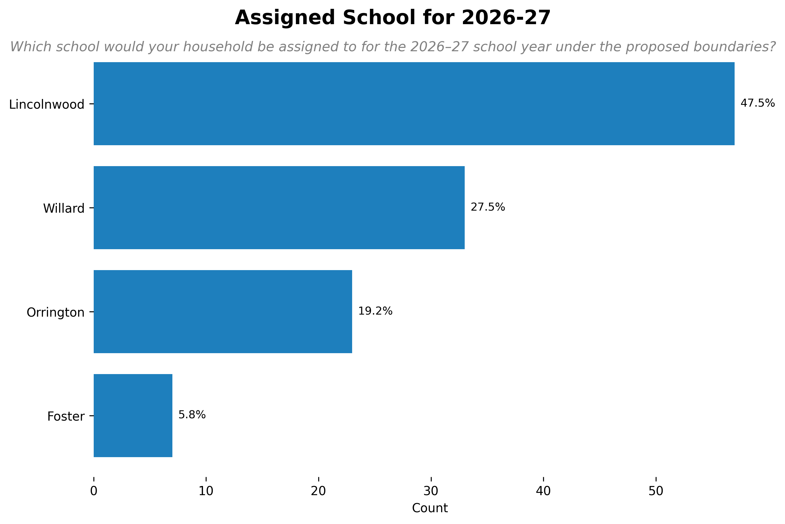
Lincolnwood emerged consistently as the most preferred receiving school.
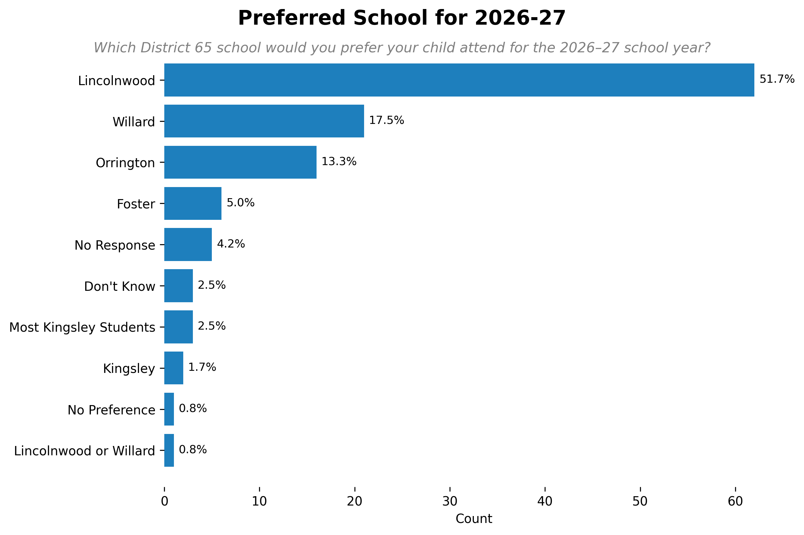
69% indicated that their assigned school under the proposed boundaries is also their preferred school for 2026–27, but many respondents would prefer the flexibility to choose the school that is right for them.
Survey results show strong alignment between Kingsley families and the district’s attendance boundaries for families entering the district in fall of 2026. A large majority of respondents (75%) identified walkability, safety, and ease of access as the most important factors in setting future boundaries.
Respondents simultaneously expressed concern about the potential loss of Kingsley’s close-knit community. 75% of survey respondents either prioritized maximizing the number of students who remain together or offering flexibility for families to choose the school that works best for them.
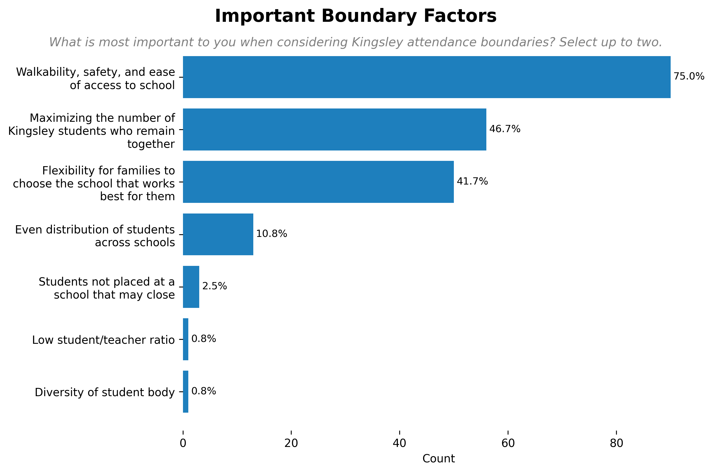
The survey asked respondents to what extent they would support a districting approach to maximize walkability and community continuity by assigning walkable attendance boundaries, and also offering guaranteed placement at a designated Kingsley receiving school for those that request it, without requiring permissive transfers. There was overwhelming support (78%) for this approach.
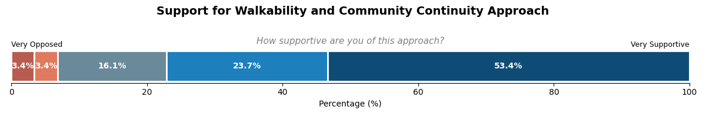
68% of respondents preferred Lincolnwood be instated as the preferred receiving school. The question noted that Lincolnwood may be an ideal school for this approach given its central location and proximity to Kingsley.
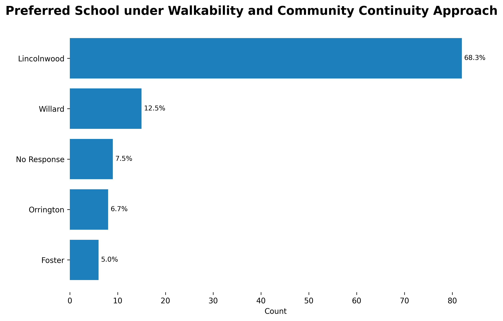
If guaranteed placement were offered for current Kingsley students, Lincolnwood is the ideal receiving school for most respondents (58%).
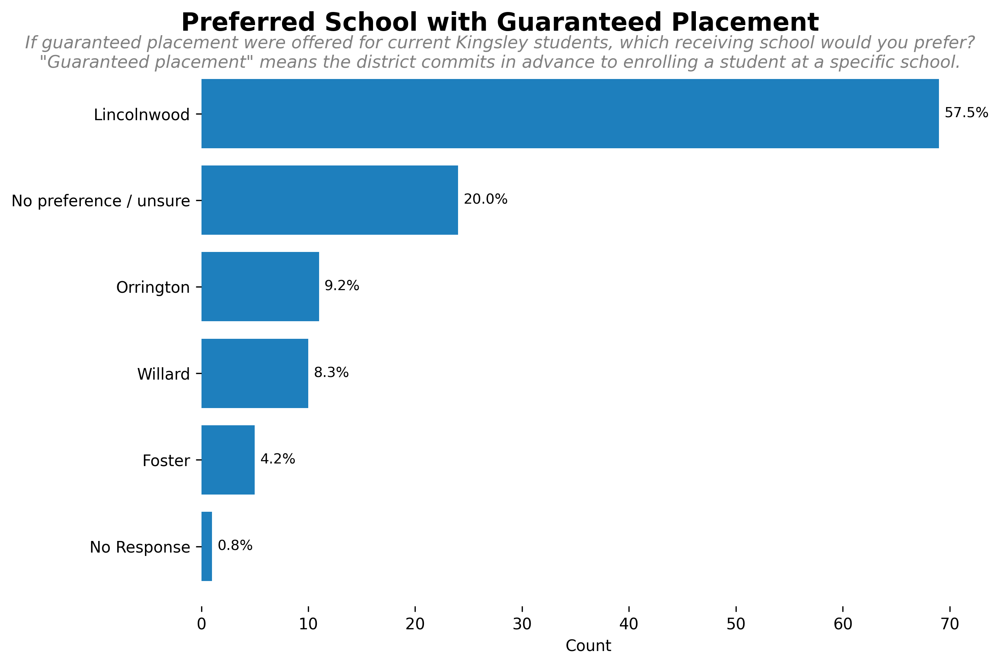
Most respondents (50%) would not request a permissive transfer in which a final placement would not be known until just before the new school year begins.
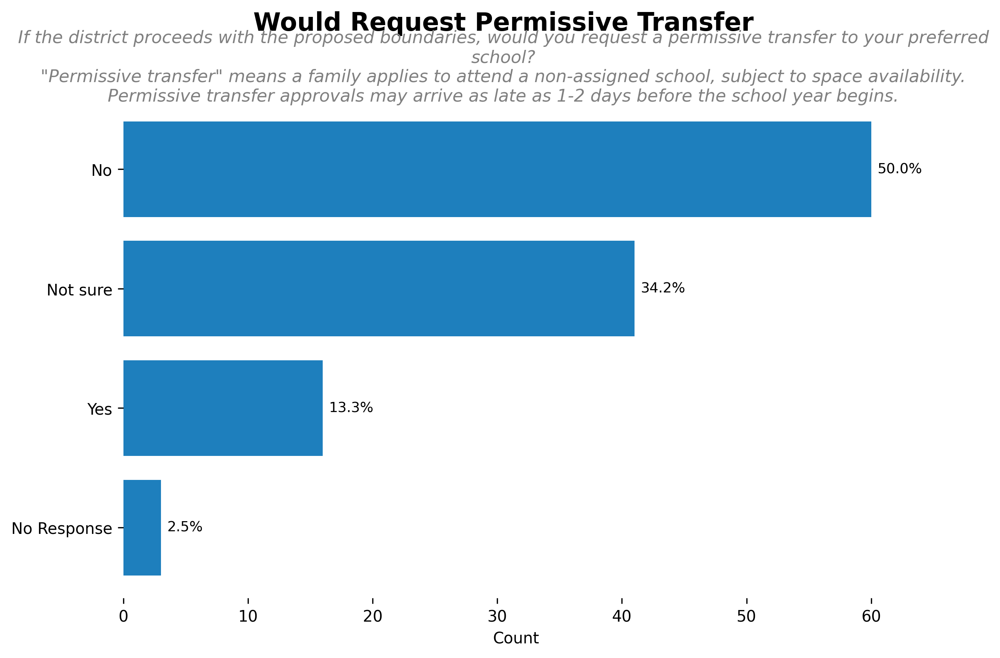
Transition Support
Survey respondents were presented with several ways that a new school might welcome incoming Kingsley students, and asked to select all that they felt would help their children feel welcomed. Most ideas received strong support, with the top rated being ways that incoming students can enter and explore the new building.
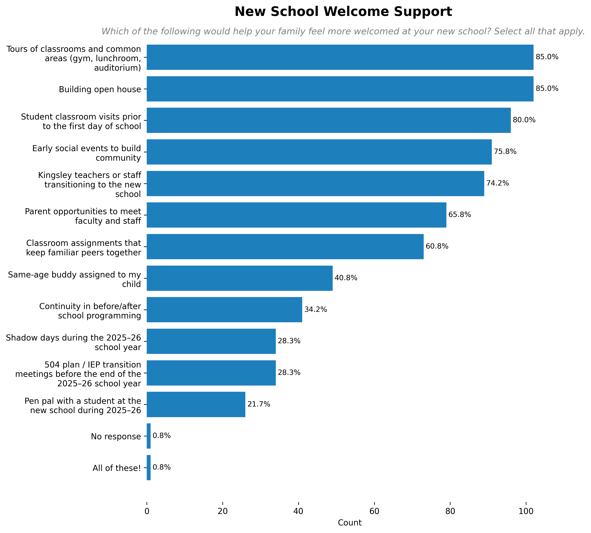
Survey respondents were asked several open-ended questions on Kingsley traditions they would like to see continue, supports needed during their school transition, and what they are worried about related to their transition.
Families identified inclusivity, communication, kindness, and support as important elements of Kingsley’s culture. They felt connection with other families through activities and events were important for supporting a positive culture. Proximity to a school matters in facilitating these connections. They identified key events they wanted to maintain in order to offer continuity to Kingsley families.
Respondents want opportunities for students to get to know their new school environment, including both the physical environment as well as the school community, students, families, and norms. They are concerned about maintaining relationships with friends, families, teachers, and staff. They want to ensure (1) families have flexibility, (2) there is continuity of services, (3) children receive transition and social-emotional support, and (4) there is timely, consistent, and accurate communication about the transition plan and district decisions.
Families expressed concerns about how kids will feel during the transition, whether they will receive the necessary supports, and whether they will receive a high-quality education. They are worried delays in decision-making, poor organization and communication, and the amount of disruption experienced by families. Families question whether the district has the capacity to navigate this transition, and whether absorbing schools have the capacity to accommodate all Kingsley students. They are also worried about the impact of longer travel distances to school on their family. Finally, parents are worried about another school closure, particularly in the 2026-2027 school year.
Intent to Stay
Respondents were asked how likely it is that their child(ren) would remain in District 65 for the 2026-27 school year. The large majority (85%) indicated they were likely to remain, but 10% of respondents indicated they were likely to leave District 65.
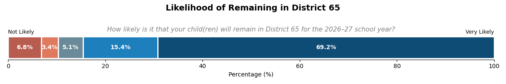
All respondents were asked where their children were most likely to attend school if not District 65. Most (56%) skipped the question, and the most common provided responses were private school in Evanston or public school outside of Evanston due to a move.
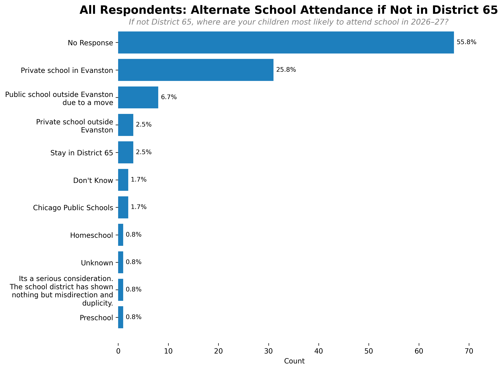
Among respondents not likely to stay in District 65, the most common school alternatives were private school in Evanston (42%) or public school outside Evanston due to a move (25%).
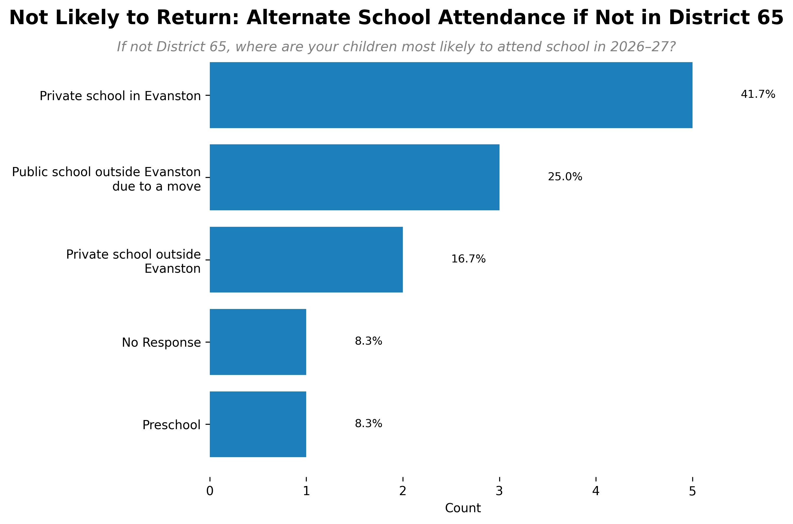
Respondents were presented with a number of factors that may cause dissatisfaction with District 65 and asked to select all that may contribute to a choice to leave the district. The most commonly cited reasons were lack of trust in district administration (63%), lack of transparency and accountability in district decision-making (58%), and lack of trust in the board of education (55%).
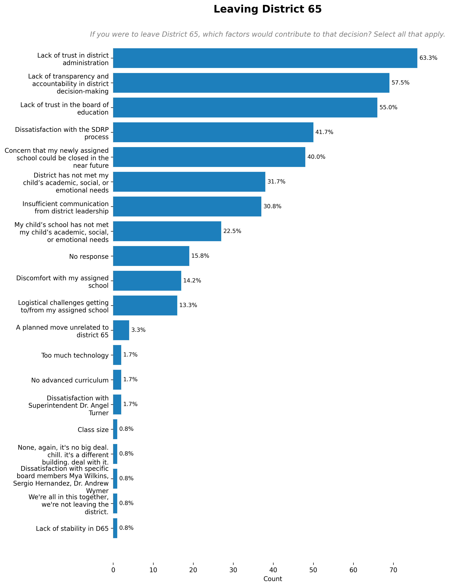
Respondents were asked what questions remain unanswered that they would like the board or administration to address. Parents primarily had questions about what supports families will receive, the justification and plan for targeting Lincolnwood for closure next year, and what the district is doing to get on better footing.
Demographics
Most respondents were a current parent of a Kingsley student (89%).
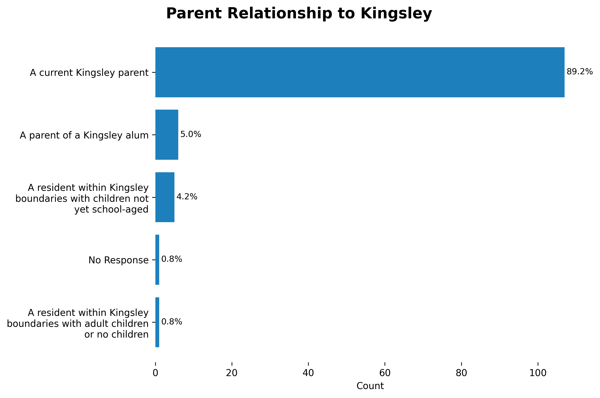
All grade levels were represented with 4th grade parents being the most common respondents.
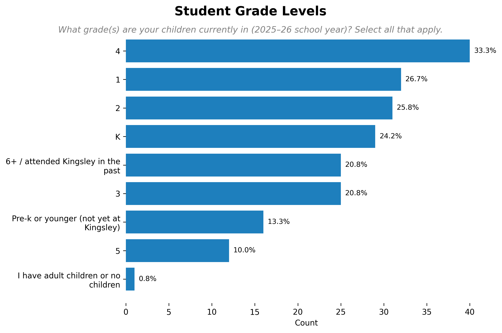
Final Comments from Parents
Finally, respondents were asked to provide any other commentary or feedback on the SDRP process that they would like the Board of Education, district administration, Invest in Neighborhood Schools (IINS), or Legion of Data Nerds to consider.
Generally parents expressed anger and frustration about the process. Parents reported distrust of the district and its leadership, although some parents specifically recognized newly elected board members for questioning the process and challenging assumptions. They want problem-solving and creative solutions. They viewed the process as flawed, and are fearful of further financial mismanagement and closures. They appreciate the support that other schools and families have provided. They are also worried about Kingsley teachers and staff and want them to be considered.
“I don’t trust the board or our district admin, but I do trust our community. The approach the administration took fostered a big divide in our community and enforced that divide by allowing community members to disparage each other.”
“My children’s transition to a new school will be successful because of the families and staff at Kingsley and Lincolnwood. I have no trust or faith that the administration or the Kingsley liaison will provide anything beyond performative support for our community.”
“Have Biss rezone Kingsley’s land, sell it, build low income/high density housing and take Lincolnwood closing off the table.”
“Kingsley is bearing the brunt of the district’s mismanagement.”
“Simply put, I have zero faith in the school board and take MAJOR issue with the process in which this decision to close Kingsley school was undertaken.”
“I hope that the District will prioritize NOT moving children twice in 2-3 years due to potential 2027 school closures.”
Discussion
Kingsley parents are supportive of the walkable boundaries the board approved and most intend to remain in District 65 next year. However, there is also broad community support for allowing early guaranteed placement to keep the current Kingsley cohorts together, and strong sentiments of dissatisfaction at the district leadership level.
Kingsley parents identified numerous ways to help ease their children’s transition to a new school, foremost being ample opportunities to tour and become familiar with the new spaces.
Appendix
Additional Qualitative Analysis
The open-ended survey questions provided a wealth of information. These results are summarized above, and more detail is provided below.
What traditions, programs, or aspects of Kingsley’s culture do you hope will continue in your child’s new school?
Families reported that a positive school community was important for their children. Respondents identified inclusivity, communication, kindness, and support as important elements of the Kingsley school culture that they wanted to maintain. Parents specifically felt that connection with other families, through regular and positive interactions between parents and families, helped to foster a positive school culture. Parents observed that the school’s location matters and that a family’s proximity to a school enables more in-person interactions that build community.
Parents also specifically described how activities and events can serve to help build a positive culture and community–especially among parents and families. Responding families identified traditions and events that were important. The Fall Fest/Haunted Hallway event, the talent show, and the Spring Fest and Small Tall Ball were the most commonly named events. Families also identified other music performances, 5th Grade farewell events, and the Fun Run as valued. Families expressed a desire to continue these events to provide continuity for kids.
Finally, families described the important role that teachers and staff play in feeding a positive school culture. And expressed a desire for teachers and staff to follow their kids to a new school.
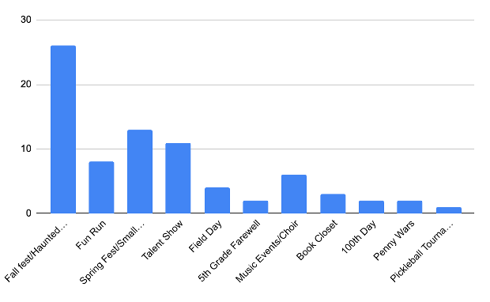
What support will your child or family need most during this transition?
Parents expressed concerns about worry, discomfort, or unease felt by students during a transition to a new school. Respondents want opportunities for students to get to know their new school environment, including both the physical environment as well as the school community, students, families, and norms. They also want to feel welcomed and included in their new school. Ideas for connection include a buddy system, shadowing opportunities, school tours, school events, and social gatherings.
Families are also concerned about maintaining relationships with friends, families, teachers, and staff. They expressed a desire to keep friend groups together and have access to known teachers and staff within the new building. Respondents specifically expressed concern about the well-being of transitioning teachers and staff, and wanted to ensure their needs are recognized. They also want the district to provide families with flexibility so that each family can choose a school situation that is best for them.
Parents of children receiving services or support are worried about the continuity of these services at the new school. They want information about before or after-school programming. They also request support for kids with IEPs or 504 plans to ensure the transition isn’t harmful to these students. Families also voiced the need for social-emotional support for transitioning students, as well as maintaining high-quality education and teachers.
Families are looking for stability and asked that the district minimize further closures or disruptions. Multiple respondents also specifically asked for empathy from the district.
Parents expressed a strong desire for clear communication from the district about the transition process. Most commonly, this included requests for timely, consistent, and accurate communication. Parents want to know where other kids will be going, where teachers and staff will be assigned, and what programming they can count on at the new school. Timeliness of information was viewed as particularly important–parents feel a need to know what to expect so they can prepare.
What are you most worried about regarding your school transition?
A primary worry among responding parents was the well-being of Kingsley students. They expressed concerns about how kids will feel, whether they will receive the necessary supports they need, and whether they will receive a high-quality education. Generally, a large number of respondents were concerned about changes to their child’s community, including getting separated from close friends, trusted teachers or staff, or not being fully integrated into a new school. They are also worried about kids maintaining important relationships during this transition while also navigating new social dynamics.
Parents are concerned about the impact of this closure on children with health issues, allergies, those who are neurodivergent, or those who need specialized services. Parents are worried about whether their children will get the support that they need, whether they will be safe, and whether there will be trusted adults available to them. They are also worried about the teachers and staff in their building, how they will be impacted by this transition, whether they will lose their jobs, and whether they will be able to remain with the kids they know.
Parents expressed concern about the transition process itself. For example, they are worried about the timing of decisions, the level of organization and communication, and the amount of disruption experienced by families. Parents are concerned about a disorganized process that harms students and results from poor planning or management. For example, if decisions are made at the last minute, families won’t have time to prepare their children. They are also worried about not having autonomy or the ability to change their school choice based on their needs. They wonder whether the process will be organized in a way that minimizes harm to kids and families. Families question whether the district has the capacity to navigate this transition, and whether absorbing schools have the capacity to accommodate all Kingsley students.
Parents are worried about another school closure, particularly in the 2026-2027 school year. Parents are concerned about the motivations of decision-makers and are worried that children and families will not be centered in the process. They worry that not enough effort will be put into identifying alternatives to minimize additional closures.
They also had logistical concerns related to transit to/from the school–particularly around their ability to get to their new school and the feasibility and safety of walking. Some parents noted the importance of the Kingsley community in helping manage transit needs (including carpooling), and the impact of the loss of this network on their family.
Finally, families are worried about academic quality. They are concerned about increases in class size, reductions in education quality, or difficulty maintaining educational standards. They want reassurance that academic quality will not suffer, and concrete steps to protect quality.
What questions remain unanswered that you would like the Board or administration to address? [responses synthesized below]
How will the district support Kingsley families?
- Who on the board is supporting Kinglsey families? Will Kingsley have a liaison who meets with families?
- What assurances can the district and board give to Kingsley families to restore trust?
- What is the district’s plan for addressing the trauma associated with school closures?
- How is the district going to take care of families?
- What help will the district provide in address barriers to getting to/from a new school?
- What specific actions will be taken to ensure that students needs are met and children are supported?
- Will families be allowed permissive transfers and when will they be notified about approvals?
What is the plan/justification for targeting a potential Lincolnwood closure next year?
- What is the timeline and plan for any additional school closures?
- Why is only Linconwood considered for closure and not other schools?
- What actions will you take to minimize the risk of closure?
- What are criteria for an additional closure? What are your targets and how do you plan to meet them?
- Why is the district focused on closing adjacent schools? Why isn’t the district considering closure of Magnets?
- Can the board justify their decision-making process and explain how families were centered in the process?
- Is the district committed to walkable neighborhood schools?
What is the district doing to get on a better footing?
- What will the district be doing to reduce costs, increase utilization, and improve quality?
- How can the board and the district restore a respectful dialogue, and address harmful, or hurtful comments directed at Kingsley families?
- How will the district address inflated administrative costs?
- How will the district restore trust with district families?
- What will be done with the Kingsley building?
- How will the district ensure academic quality?